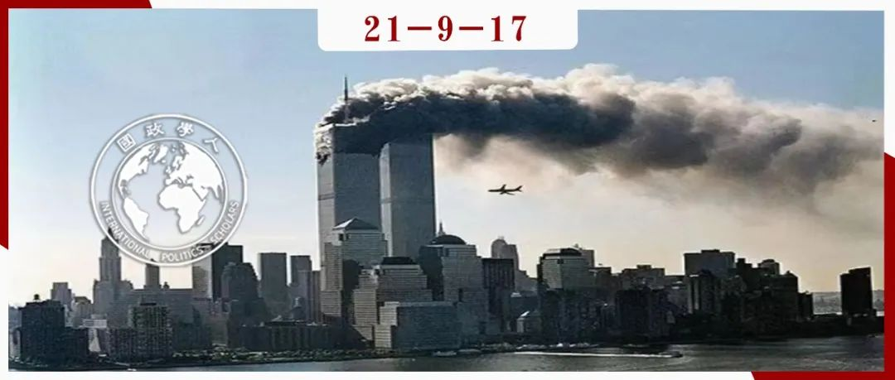

收录于合集 #美国研究 24个

作品简介
作者： Hal Brands，约翰·霍普金斯大学高级国际研究学院(SAIS)亨利·基辛格全球事务特聘教授。Michael O’Hanlon, 布鲁金斯学会高级研究员。
编译： 胡可怡（国政学人编译员，中国人民大学国际关系学院硕士研究生）
来源： Brands, H.＆O’Hanlon, M. (2021). The War on Terror Has Not Yet Failed A Net Assessment After 20 Years [J]. Survival ,63(4), 33–54
归档： 《国际关系前沿》2021年第9期，总第36期。

内容提要
“9·11”事件二十周年之际，亦正值阿富汗局势经历猝变，有关美国反恐战争的讨论再度升温。本文结合历史与现实，对“9·11”事件以来美国“全球反恐战争”的是非得失进行了较为全面的回顾与评判，并以此为脉络透析了近期阿富汗的局势变化与未来走向，对拜登撤军的背后逻辑进行了梳理。作者认为，美国反恐战略的结果是可以接受，但不甚理想的。拜登政府在阿富汗所做的决定是一次十分冒险的实验，而目前对美国决策者而言，最有可能犯的错误是由于过度的悲观情绪而放弃一场美国实际上已经探索出有效应对路径，并且仍需未来多年战略持久性的斗争。
文章导读
一代人的挣扎与斗争已经迎来了具有里程碑意义的时刻。今年是“9·11”事件20周年，这一恐袭事件在当年直接促使小布什政府发动“全球反恐战争”（global war on terror，简称GWOT）。虽然这一行动的名称和策略变动不停，但其利用美国所有形式的力量防止危害美国及其盟友的重大恐袭事件的基本目标却始终延续。随着拜登政府的上台，打击跨国暴力极端主义（尤其是曲解逊尼派伊斯兰教义的萨拉菲极端主义）的行动已持续了四任美国总统任期。然而少有观察家会公开表示这场反恐运动在战略上是成功的。
毫无疑问，“全球反恐战争”并未按其计划进行，但简单地将其视为一场战略失败也是错误且草率的。实际上其取得的成果比最初看起来的要多得多，对此可以根据六个关键标准来评估GWOT的得与失。就保护美国本土免遭另一场灾难性恐袭、摧毁恐怖分子的避难所、肢解恐怖组织势力三个标准而言，GWOT取得了较为显著的成绩。但在改善地区稳定、降低全球恐怖主义总体水平方面，GWOT却遭遇了明显的失败，这也是恐怖主义威胁不会在未来快速消退的原因。而就最后一项标准——成本与损失而言，人们对此各执一词。GWOT造成的人员、经济以及地缘政治损失超过了所有人的最初预测，但随着美国逐渐采取一种以成本意识（cost- conscious）及有限责任（limited-liability）为特征的反恐路径，上述损失已经大幅下降。 美国决策者现在最有可能犯的错误是：由于过度的悲观情绪而放弃一场美国已经探索出有效应对路径，并且仍需未来多年战略持久性的斗争。
01
功大于过
从一开始，GWOT最重要的目标便是保护美国本土免受大规模恐怖袭击的侵害，这些恐袭可能会从根本上破坏美国式的生活方式。要实现这一目标，就需要摧毁萨拉菲派信徒（Salafists）的主要避风港，同时对恐怖组织及其领导人进行有效打击。以这些标准衡量，美国反恐战争取得的成绩远远多于其失败之处。
（一）国土安全（Homeland security）
最明显的是，自“9·11”事件以来，美国及其盟友都没有遭受过另一次规模如此大的恐怖袭击，在本国国土上被受萨拉菲主义影响的极端分子杀害的美国公民数量远少于同一时期为极端右翼分子所杀害的人数，并且只占全国死于谋杀人数的一小部分。如果没有GWOT，这个数字可能会更为触目惊心。在“9·11”之后，白宫收到的威胁大量涌至。2001年末的炭疽事件更是加剧了人们的普遍担忧。在那时看来，“9·11”可能预示着将要频繁发生的、甚至可能涉及大规模杀伤武器的大规模袭击。
到目前为止，美国得以成功避免这一结果出现的原因仍有待商榷，运气在挫败恐袭时发挥了作用，但显然美国自“9·11”以来实施的政策，如：整合恐怖分子观察名单；对输入美国的货物进行预先检查；在边境口岸使用更先进的技术；完善基层警务工作；在情报工作和国土安全维护方面投入更充足的资金，均取得了一定效果。越来越精确的金融制裁；与其他国家在执法和情报领域的合作；秘密行动、准军事打击（paramilitary strikes）和持久的军事行动也给恐怖组织带来了极大的压力。总而言之，美国使自己成为了对恐怖主义而言更难对付的目标（a far harder target），换句话说，也让恐怖分子愈加难以生存。此外，在维护国土安全的过程中，美国也未使其国内政治运行受到破坏。总体来看，美国式的生活方式基本完好无损地保存了下来。
（二）摧毁恐怖主义的避风港（safe havens）
在有效打击恐怖分子避难所方面，美国表现得也可圈可点。一些学者认为现代恐怖组织在没有控制大片土地的情况下也能够蓬勃发展，因此领土避风港的重要性被过分夸大了。但自2001年以来，美国的官员一直相信，领土避风港是极端组织关键的力量倍增因素（force- multiplier）。早在20世纪80年代，包括基地组织在内的恐怖组织在占领可用以组织与聚集的特定领土时，就逐渐开始扎根与扩展。这些恐怖组织对占领领土所得加以利用，训练对其他国家进行恐袭的专员，酝酿激进的宣传策略吸引外国人加入，此外还通过控制石油等资源为开展恐袭提供资金支持。
因此，捣毁恐怖主义的避风港一直是GWOT的主要作战目标，例如，在“9·11”之后，美国特种作战部队和情报人员与北方联盟（the Northern Alliance）合作，推翻了塔利班政权并摧毁了基地组织的主要巢穴所在。在接下来的几年里，美国利用其在阿富汗的基地，以及无人机行动，削弱了基地组织在巴基斯坦联邦直辖部落地区的渗透。美军在伊拉克的行动虽然无意间使该国成为了恐怖主义的温床，但随后与当地盟友合作扼杀了随之出现的“哈里发国”（caliphates），杀死或俘获了藏匿其中的恐怖分子。到2017 年底，伊斯兰国已经失去了它之前所控制伊拉克和叙利亚领土的 95%。
当然，美国打击恐怖主义避风港的方式随时间发展也有明显的转变。在2011年成功击杀本·拉登之后，奥巴马政府转而采取一种以无人机和特种部队为特色的“轻型足迹”反恐路径，但这最终未能阻止极端主义团体在伊拉克、叙利亚和也门死灰复燃。因此，自2014年起，美国逐渐在关键地区转向类似“中型足迹”的策略，加大对了当地武装的依赖，为其提供空中力量、后勤、人员培训支持，并保留少量地面武装力量以保持威慑。这一策略与对恐怖主义运动的外交、人口和经济孤立政策结合运用，成本效益相对较好。
另一方面，从直观上看，上述策略仍然是一种治标不治本的“割草式”应对途径，因此理论上这一策略必须无限期地施行下去，直到当地孕育出本土制约因素，剥夺恐怖分子在未来训练、招募、组织人员的能力。
（三）斩首恐怖分子领导层、瓦解组织内部等级制
可以肯定的是，并非所有极端组织都需要关键领导职位的连续性。一些恐怖组织已经发展出了具有足够深度的内部等级结构，使得它们通常能够经受住失去关键领导人的打击。但即便如此，重要个人的作用依然重要。在尝试新的、复杂的恐怖主义阴谋时，或在战场上进行重大战役时，具有优秀技术与组织能力的个人是必不可少的。最高领导层的弹性可以佐证组织愿景的可信度，而逮捕或杀害领导人则会破坏团体聚合，使其陷于潜在继任者争夺权力的漩涡中，并迫使继任者花费大量精力逃避追杀（同时意味着逃避现代通信）而仅仅追求生存这一最低限度的目标。另外，对关键职位人员的击杀亦会扰乱恐怖组织现有的惯例与运行模式，使其处于持续的不稳定状态中。
据估计，在“9·11”事件之后，美军及其国际伙伴在阿富汗杀害或俘虏了80%的基地组织领导人和工作人员，包括哈立德·谢赫、本·拉登、穆萨卜·扎卡维、巴格达迪，还有大部分该组织在巴基斯坦联邦部落地区的二线领导人。已故的塔利班领导人毛拉·奥马尔为了保存性命，晚年生活在默默无闻之中，拉登的继任者扎瓦赫里似乎也在走前者的老路。
02
衡量“失败”的标准
在“9·11”事件后，很明显，在GWOT中取得的任何持久胜利都需要将战术上的收益有效转化为对支持萨拉菲运动蓬勃发展政治条件的长期削弱，使恐袭数量得以缩减。就此而言，美国反恐战争战绩平平。
（一）萨拉菲运动的规模、力量与杀伤力
每年的恐怖主义受害者人数在2014-15年达到顶峰，这也是伊斯兰国声势最浩大的时期。然而这一数字尽管自那之后有所下降，但数据表明，每年死于恐袭的受害者人数仍然比“9·11”发生后的最初几年多三至五倍。同样，由伊斯兰教主义者所煽动内战造成的死亡人数高于上世纪九十年代与本世纪前十年的全球总和。大多数暴力事件虽未直接夺走美国公民的生命，但对美国在中东的利益构成了战略威胁，并造成了人道主义灾难。
认为暴力事件的增加是美国反恐战争的结果过于草率，美国对萨拉菲主义者横行国家的深度介入是合乎逻辑的。恐怖主义的持续高发反映了这些地区地方治理长期失灵、将伊斯兰教义武器化、歪曲宗教等多年顽疾。 华盛顿虽并未有效解决上述问题，但也并非问题的始作俑者。
然而在某些情况下，美国的政策确实增长了萨拉菲主义运动的势头。 美国情报官员在2006年承认，“伊拉克战争使恐怖主义问题变得更加糟糕”，因为这场战争助长了反美主义（anti- Americanism），使伊拉克变成了下一代恐怖主义狂热分子的训练基地。同样，2011年由美国牵头的对利比亚的干涉也产生了类似的反效果。在叙利亚内战中，美国在鼓动阿萨德政权的反对者方面做得已然足够，但却没有为反对者取得成功提供有效手段，随之而来的便是有利于恐怖主义滋长的无政府状态。唐纳德·拉姆斯菲尔德（Donald Rumsfeld）2003年提出的问题至今仍然困扰着美国：“我们每天捕获、杀死、威慑、劝阻恐怖分子的速度是否快于伊斯兰学校招募、训练和部署恐怖分子的速度？”。
（二）促进大中东地区的政治改革与稳定
可悲的是，对于大中东地区的政治状况是否有所改善这一相关问题，答案也依旧是否定的。近十年来，在“阿拉伯之春”创造的机会转瞬即逝之后，这一地区的局势大体来看还是糟糕不堪。2021年，国际危机组织（(International Crisis Group）列出的十场值得关注的冲突中一半发生在逊尼派阿拉伯世界。“阿拉伯之春”之后，陷于圣战分子推动的动乱，或者肆无忌惮运用国际暴力镇压国民的国家数量远远多于成功实现多元化稳定的国家。伊拉克充其量只是一个半运作（semi- functioning）的民主国家，阿富汗的民主治理只能依靠外援、军事支持与政治干预。总的来看，没有任何美国决策者会对中东地区的现状感到满意。
从这方面来看，入侵伊拉克的负面效应显得尤其突出。伊拉克理应成为一个更为宏大的区域转型项目的基石，但是美国的侵入和不当占领释放了不稳定和暴力因素，反而阻碍了该地区的民主改革。在伊拉克和阿富汗，美国为自己设定了非常高的目标，但是几年来未能坚持一贯且连续的国家建设战略。而在这两国之外，一系列令人生畏的地区问题——人口迅速增长、收入停滞、机会缺乏、腐败、专制和政治暴力的长期遗产——仍推动着地区朝着不稳定和暴力镇压的方向发展。美国并非大多数问题的根源，但是它确实周期性地使这些问题变得更加糟糕，并且没有表现出足够的技巧和决心解决问题。总体来看，美国在该地区进行干预的成本远高于决策者们在2001年的预期。
03
代价
就耗费的人力和财力而言，伊拉克战争和阿富汗战争的直接成本都达到了1万亿美元，再加上未来支付退伍军人福利的成本，这个数字将达到4万亿美元，相当于美国公开持有的联邦债务的20%。但与人力成本相比，财力成本显得微不足道。超过7000名美国公民在战争中死亡，重伤或致残人数是死亡人数的10倍，还有许多人饱受创伤后压力及其他精神障碍的折磨，导致自杀率与离婚率上升。当地居民付出的生命代价甚至更大，例如在伊拉克，据估计有100000至600000人在美国入侵及其余波中死亡，这也激起了人们对支撑美国地区外交政策的道德主张的冷嘲热讽。
最重要的是，GWOT造成了严重的地缘政治成本。它破坏了美国与欧洲盟友的关系，激怒了俄罗斯等长期竞争对手，挤压了美国在对抗伊朗和朝鲜等流氓国家时的行动自由，还分散了对崛起中国日益显著挑战的注意力。布什政府最初将GWOT视为重振美国领导地位的重要方式，但华盛顿却以比冲突开始时更糟糕的地缘政治地位，最终在斗争最激烈的时候选择了退出。
如果有人认为，GWOT对美国国家政策产生了腐蚀性的（corrosive）影响，使国内政治氛围变得更加不自由（illiberal），那么对反事实进行分析是必要的。如果美国对恐怖主义采取更加宽松的态度，并且在安全事务上不作投入，今天美国国内政治可能会更加稳定和平静，但也有可能导致更多袭击事件，并加剧国民不安全感，结果可能形成一种更有利于仇外心理（xenophobia）和恐惧散布的氛围。而如果美国选择了一种几乎完全专注于强化国内安全，而非对外军事打击恐怖组织的战略，那么政府对公民自由的限制程度将更甚，中东也可能处于更加动荡的状态。
更为重要的是，GWOT的成本随着时间的推移已经大幅降低。自2015年起，相较于伊拉克和阿富汗战争高峰时期的死亡人数，美国军人在战斗中阵亡的人数每年都只有几十人。以“海外应急行动”耗资衡量，美国在中东地区的军事存在和战略运行每年花费约500至600亿美元，在该地区驻扎的军事人员数量约为十年前的三分之一。而随着其他地区安全挑战的加剧，地缘政治注意力分散的问题随着美国在中东的收缩也逐渐得到缓解。
04
评估美国的战略及拜登有关阿富汗的决定
到目前为止，美国基本实现了其发动GWOT的基本战略目标。本国的国土安全、公民安全、政体、经济和生活方式均得到了相当好的保护，而这很大程度上归功于美国对威胁本国的极端组织实施了严厉的惩罚。但美国及其盟友似乎并没有安然将GWOT划上圆满的句号，因为萨拉菲主义暴力和地区不稳定问题比冲突开始时反而严重得多。 简而言之，美国反恐战略的结果是可以接受，但是不甚理想的。 并且在有些人看来，过高的成本表明华盛顿可能一直采用着资源密集度较低（less resource-intensive）的反恐路径。
这种批评有一定道理，以成本控制、政治上可持续的方式开展GWOT最终需要发展出一种可被称为“中等足迹”的反恐路径，这种路径既不同于在伊拉克以及阿富汗后期采用的大规模干涉，也不同于最初在阿富汗尝试的“极简主义”（minimalist）反恐策略——在本世纪初十年，这种专注于反恐行动，支持当地合作伙伴，避开武力国家建设的策略并未给阿富汗带来某种程度上的局势稳定。而这也是美国在布什执政后期和奥巴马执政早期选择逐渐扩大在阿富汗存在的原因。
尽管在过去几年里人们对“永远的战争”感到绝望，但 美国已经制定出了一个相当有效且可持续的路径，以管理在短期内不会得到解决的恐怖主义问题。 借助军事与情报能力维持众多地区立足点、通过训练与使能增强当地武装的实力、在推动政治改革的过程中压制最严重的威胁。通过上述措施，美国能够以可接受的代价实现可接受的安全。
而这也就是拜登政府有关阿富汗的决定如此令人担忧的原因。在某些方面，拜登选择从阿富汗撤军，是美国对多年累积的高额成本以及不尽人意的干涉结果做出的本能回应。然而， 撤军更多地源自拜登在2009年担任副总统时对GWOT“代价高昂”的不可持续性质所作出的评价，而非来自对近期追求更高效、更精简的冲突管理的正确回应。 截至2020年，美国在阿富汗的存在比起巅峰时已经缩减了95%。通过撤军，拜登使美国暂时从这场不会很快圆满结束的冲突中抽身，同时也接受了阿富汗再次成为恐怖分子天堂的可能性——要么被塔利班接管，要么陷入各个极端主义团体猖獗的混乱局面。
随着美国军队和一些外交人员的撤出，美国将失去对阿富汗的部分影响力。一旦美国只专注于空中行动，它也将失去对地面状况的精准认知。情报网络是在平民中筛选恐怖分子的最佳手段，但是只在美国保持存在，并且与可能的信息源保持融洽与信任的情况下才能发挥作用。无人机也可作为感知态势变化的媒介，但是由于摄影孔径无法全面扫描大片陆地，因此运用范围相对局限。另外，相较于卡塔尔或者印度洋的远程基地，将无人机部署在附近基地的效果要好得多。从海湾地区派出侦察机要么需要与某个中亚国家达成谈判以获得进入该国领空的许可，要么需要得到巴基斯坦的配合，而后者充其量只是一个不甚可靠的未来合作伙伴。有鉴于此，无论塔利班政权建立与否，极端主义的重新扩张就目前看来具有非常大的可能性。
总而言之，拜登政府所做的决定是一次十分冒险的实验。多年以来，历任美国总统都默认了这样一种观点，即认为干预阿富汗所产生的成本是GWOT取得进展所必须承担的代价。 然而拜登却孤注一掷，认为美国可以在保证反恐取得进展的同时减少所背负的军事承诺。如果拜登的判断是正确的，那么美国国民可能会对GWOT持续多年的意义所在感到迷茫；如果判断错误，那么美国长期进行斗争的逻辑也会受到质疑。大中东地区仍然是“糟糕选择之地”（the land of bad options），在这里，尽管今天的情况已然很糟糕，但是明天可能还会更糟。而这也正是为什么在20年后，美国仍然需要在全球反恐过程中保持坚持和耐心的原因。
译者评述
本文基于对GWOT过程的回顾，对美国多年反恐策略的是非功过进行了较为全面的评估。不同于国内外舆论对反恐战争的普遍唱衰，本文耗费诸多笔墨讨论了反恐战争的成功之处，认为美国的反恐历程基本上实现了基本的战略目标，在维护国土安全、摧毁恐怖分子避难所、肢解恐怖组织内部等级制等方面表现得可圈可点，并且还成功探索出了一条有效且可持续的“中等足迹”反恐路径。
另外文章也承认，反恐战争为美国造成了人力、财力和地缘政治的沉重成本负担，并且在根治恐怖主义、推动中东地区政治改革等方面的成果乏善可陈。对于存在多年的地区治理问题，华盛顿虽非始作俑者，但亦未能有效解决这些问题，甚至在一些情况下促进了恐怖主义的滋长。而对拜登在阿富汗的撤军决定，本文总体持一种不甚赞同的微妙态度，认为撤军更多地源自拜登在2009年担任副总统时对GWOT“代价高昂”的不可持续性质所保留的旧式印象，而非对近期更高效、更精简的冲突管理方式的正确回应。作者接着指出，拜登政府所做的决定是一次冒险的实验，而美国决策者目前最有可能犯的错误便是由于过度的悲观情绪，放弃一场美国已经探索出有效应对路径并且仍需继续的斗争。
纵观全文，文章所列举的GWOT成功之处多为扬汤止沸的“治标”之举，但是所列举的失败之处却正反映了美国未能在“治本”方面取得显著进展。美国反恐的成就似乎主要体现为战术性的胜利，而非战略性的成功。“治标”的手段虽然有效，但是“治本”的目的却并未达成。就此意义而言，作者认为“美国反恐的结果可以接受”，并且大篇幅渲染美国在维护国土安全这一最低限度层面上的胜利未免有粉饰太平的嫌疑。然而，关于反恐战争的争论注定没有定数，反恐的历程似乎也难有尽头。正如文章结尾所言：“大中东地区仍然是‘糟糕选择之地’，尽管今天的情况已然很糟糕，但是明天可能还会更糟。”美国该如何在中东做进一步选择，这无解的难题将仍然在未来持续困扰着美国的战略决策者。
词汇整理
全球反恐战争 global war on terror，简称GWOT
哈里发国 caliphate
反美主义 anti-Americanism
腐蚀性的 corrosive
仇外 xenophobia
审校 | 常佳艺 胡瑞琨
排版 | 秦子宁 邱意雯
文章观点不代表本平台观点，本平台评译分享的文章均出于专业学习之用, 不以任何盈利为目的，内容主要呈现对原文的介绍，原文内容请通过各高校购买的数据库自行下载。

国政学人
支持学术公益与知识传播
微信扫一扫赞赏作者 __赞赏
已喜欢，对作者说句悄悄话
取消 __
发送给作者
发送
最多40字，当前共字
上一页 1/3 下一页
长按二维码向我转账
支持学术公益与知识传播
受苹果公司新规定影响，微信 iOS 版的赞赏功能被关闭，可通过二维码转账支持公众号。